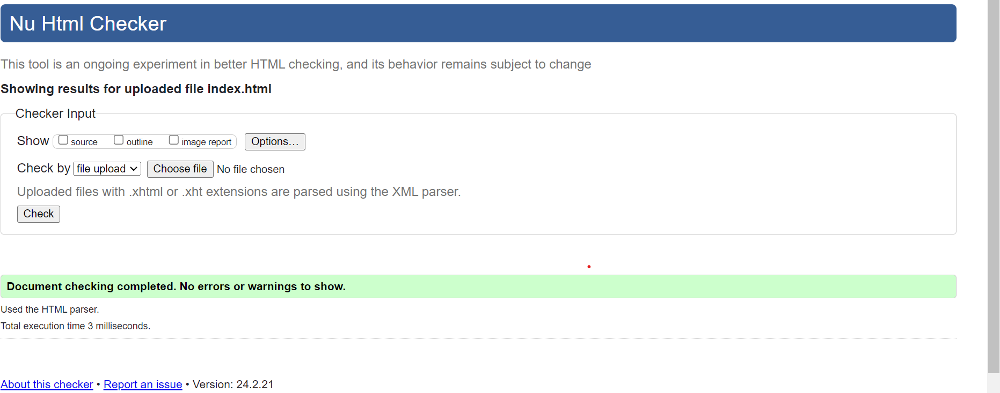
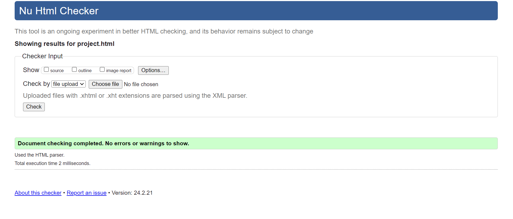
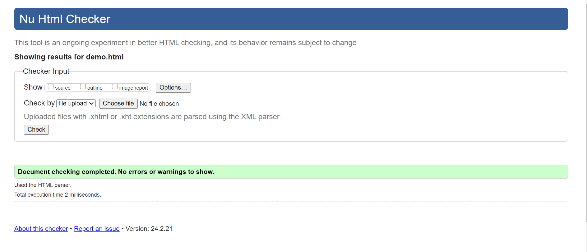
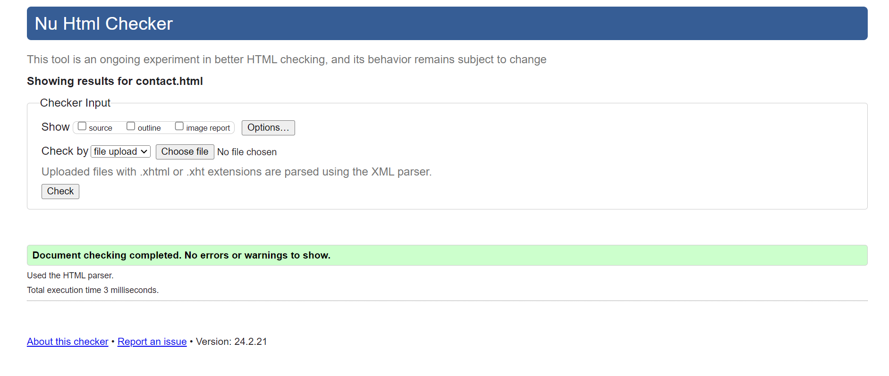
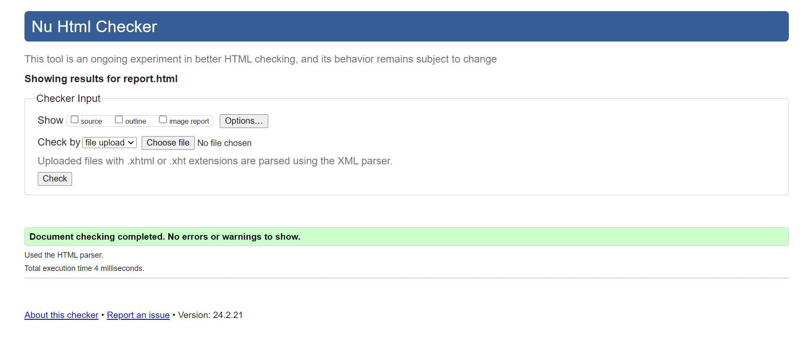

My view and reflections on studying Web Development course
At the beginning of the module, I started with very little idea regarding html and CSS, not to even talk about java script. At first i found everything so confusing, probably because i was missing most of the online classes lol. But as we moved on I started picking up one or two knowledge and I had friends that understood better than me so I started reaching out to them gathering more knowledge and soon enough i was surprised how much i got to understand just from attending classes and reaching out to friends, and because of the tutor i think it was easier to understand due to his fun style of teaching. When it comes to the project AS1, it was proving difficult at first, i was just following the class lectures pacing, I had a lot of problems but I guess that's why i have classmates, so i had help from my mates to understand better and I watched a lot of videos lol, videos from the slides, videos from YouTube I pretty much tried to get all the knowledge I could get outside lectures. Am not even going to lie i messed up my work plenty times, Buh i guess it's all try and error, I think my hardest task was selecting a background, sounds funny but I was really stressed picking a background, I know it's the easiest but a wasted too much time selecting a background color. Overall, it was fun and stressful work on the website at the end I was able to make a simple website, hopefully the next assessment won't be as stressful lol.
    